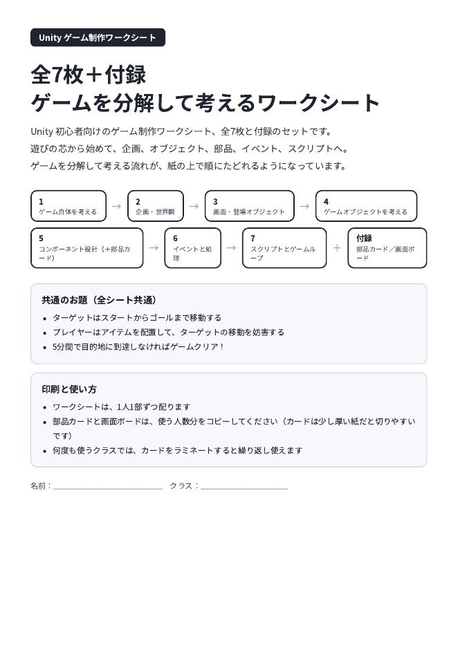
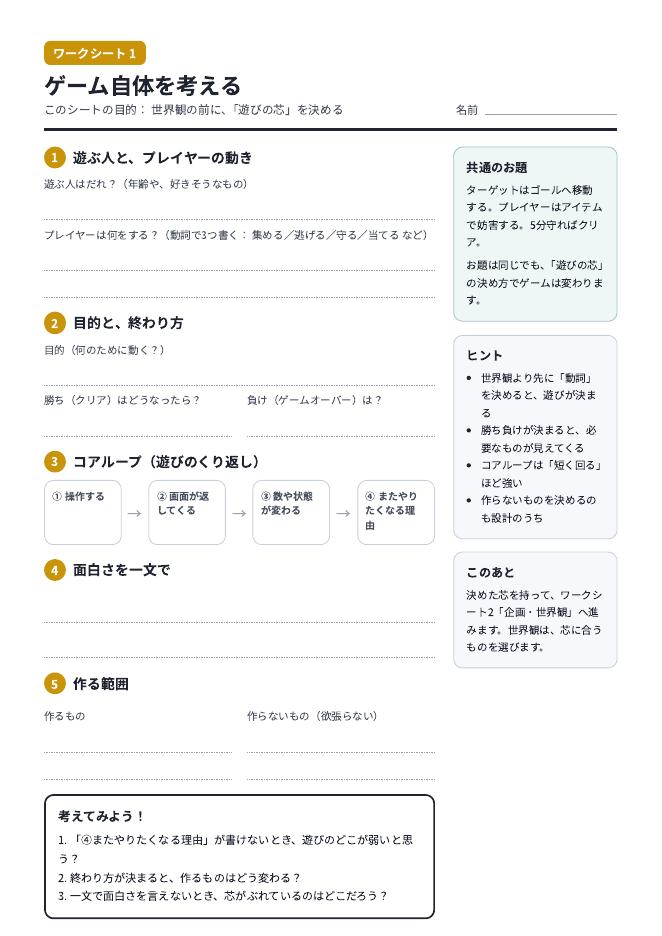
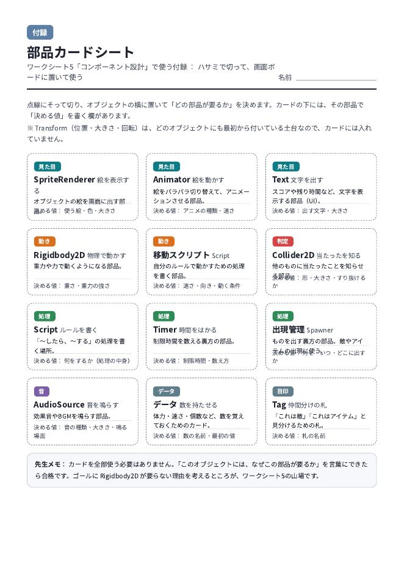

Unity 初心者向けのゲーム制作ワークシートです。遊びの芯から始めて、企画、オブジェクト、部品、イベント、スクリプトへ。ゲームを分解して考える流れが、紙の上で順にたどれるようになっています。
PDFをダウンロード（全10ページ）A4判・印刷用。部品カードと画面ボードのページは、使う人数分をコピーしてください。
題材は全員共通にして、考えることを「分解」に集中させる設計です。
付録： 部品カードシート（12種のコンポーネントカードをハサミで切って使う）、画面ボード（カードを置く台紙）。



授業での利用と印刷は自由です。改変も構いません。
使ってみた感想や、「ここはこう直した」という修正案を教えていただけるとうれしいです。教材は、使った人の声で直していけるものだと思っています。詳しくは紹介記事をご覧ください。